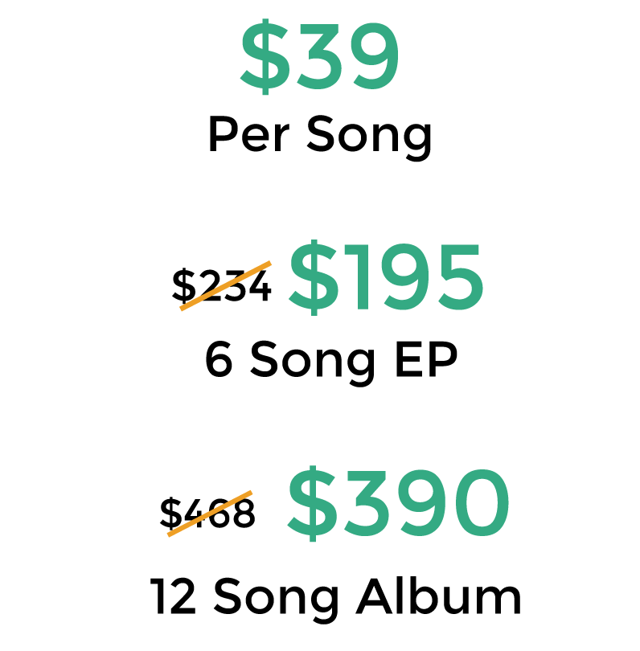

You've come to the right place.
Get Mastered is home of the absolute best rates for a professional, release-ready master. I did the research, and I encourage you to do the same!
But before you pay a single dime, it is my policy to master a song completely for free for every new potential client. I want to prove to you how much of a difference it makes to Get Mastered; that's why I will master your song, for free, with absolutely no commitment on your part.
I also have a 100% satisfaction policy; I won't stop working on your masters until they are as crisp, punchy, and LOUD as you want them! On top of all this, I offer free mixing advice, as well as free mastering preparation advice to my clients.
Without further adieu, my rates are:

Check out some of my past clients and see what they thought of their mastered tracks. I can even help you get your songs on popular music services, such as Spotify, Apple Music, and Google Play.
Interested? Drop me a line at services@getmastered.com to Get Mastered right now!
Hope to hear you soon,
Keenan
"Keenan was amazing, he worked with me throughout the process and even helped advise me on subtle ways to make my record better. He cared not just about his work process but what I did as well, and that's what makes the best records – people working together. If you want a mastering engineer to help take your recordings to the next level, Keenan's your guy."
Andrew Nappo
"Keenan and did a great job finishing the tracks. He brought some nice stuff out in the mix that I didn't hear before and made sure that everything was very even and still had punch to it. Great work."
Max Gunther
“Keenan did an excellent job mastering my songs. He was responsive to my notes and, as we collaborated, was quick to turn around each new draft. I’d recommend his services to anyone looking to get their project professionally mastered.”
Colin Zelin
"I had a great time working with Keenan from Get Mastered. He approached my music with an open-minded, collaborative attitude, offering constructive advice and expertise while still working to retain the spirit and vision of what I was trying to make. He's a talented engineer with a solid ear - I would recommend him to anyone!"
Matthew O'Connor